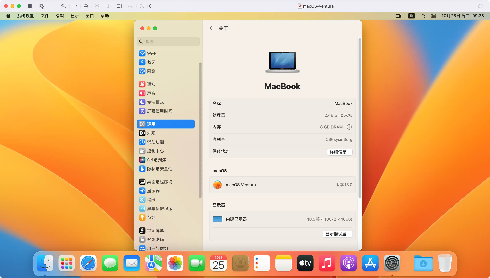

请访问原文链接：macOS Ventura 13.7.8 (22H730) Boot ISO 原版可引导映像下载 查看最新版。原创作品，转载请保留出处。
作者主页：sysin.org
台前调度等新功能帮助 Mac 用户保持专注、提高生产力

在 WWDC22 上面世的 macOS Ventura 让 Mac 体验更胜以往。
加利福尼亚州，库比提诺，Tim Cook 领导的 Apple 今日发布了 macOS Ventura，这是全球领先的桌面操作系统 macOS 的最新版本，将把 Mac 体验带入全新境界。台前调度为 Mac 用户提供一种全新方式，让用户在专注于眼前工作的同时，也能在各类 app 与窗口之间无缝切换。连续互通相机将 iPhone 用作为 Mac 的网络摄像头，可实现更多前所未有的操作 (sysin)。FaceTime 通话迎来接力功能，用户可在 iPhone 或 iPad 上开始 FaceTime 通话，然后无缝转移到 Mac 上。邮件 app 与信息 app 双双新增重大功能，用途更强大。Mac 上速度领先的 Safari 浏览器 (sysin)引入通行密钥，就此开启无密码时代。强大 Apple 芯片的广泛应用与 Metal 3 内置的新款开发者工具，让 Mac 的游戏体验更进一步。
“macOS Ventura 带来强大功能与锐意创新，让 Mac 体验更胜以往。台前调度等新工具让用户专注投入任务，并能更加简捷地在各类 app 与窗口之间切换；连续互通相机为所有 Mac 机型带来全新视频会议功能，包括桌面视图、摄影室灯光等等。”Apple 软件工程高级副总裁 Craig Federighi 表示，“凭借信息 app 的实用新功能，邮件 app 的先进搜索技术，以及聚焦搜索的最新设计，Ventura 潜力无穷，将可极大地丰富用户使用 Mac 的方式。”
应用场景
macOS Ventura 13 可启动 ISO 映像，基于 Apple 原版 App 制作，可以用于虚机安装，可以拖拽到 Applications（应用程序）下直接双击安装，也可以制作启动 U 盘安装。

图：macOS Ventura 运行在 Fusion 12 中，并开启了 Metal GPU 加速。
ISO 映像的优势
相对于官方发布 pkg 映像（另有 ipsw 映像，但仅适用于 Apple 芯片），以及第三方制作的 dmg 映像，ISO 格式具有以下优势：
- 可以直接拖拽到 Applications（应用程序）目录下（无需管理员权限），进行升级安装
- 可以直接双击挂载，执行命令写入 USB 存储设备或者其他卷，然后启动全新安装（无需拖拽到“应用程序”目录下）
- 可以直接启动虚拟机安装，介质本身为可引导映像
- 可以在 Windows 和 Linux 下写入 USB 存储设备，创建 USB 引导安装介质
- 跨平台支持，可以在任意操作系统中使用，其他格式仅限 macOS 专用
下载 macOS Ventura
部分版本已清理。

本站原创可引导映像，可以在当前系统中安装或者升级，可以通过 USB 存储引导安装，也可以用于虚拟机安装。
- macOS Ventura 13.7.8 (22H730) ISO
百度网盘链接：https://pan.baidu.com/s/1S-rTyKhjQS24PQx3uUlM1g?pwd=<专享已公布>
SHA256SUM：562cb82258eff53104c13ead1accd385af38b96178016f907732bf20dc9fae2a
✅ 公布获取此专享资源的正确方式：
为保证本站持续发展，该资源通过捐赠获取，捐赠是一种可以附加条件的行为，按照下面指定方式捐赠即可获得该项下载。
- 通过捐赠下载此版本：点击 💙支付宝 或者 💚微信支付，扫码备注邮箱（用于识别注册用户，忘记备注请提供时间），
评论区留言（以便发送链接，在其他平台留言恕无法处理）。24 小时内处理，白天会尽量及时，谢谢。 - 提示：捐赠或赞赏属于自愿赠予行为，提交后即表示您对作者的支持与认可。为避免误操作，请在确认前仔细检查金额，支付完成后将无法撤销或退还。
可指定版本，默认当前最新版。捐赠一次可获得一个版本，捐赠三次则该页面所有更新版本留言即可获取。
macOS Ventura 13.7.7 (22H722) ISO
百度网盘链接：https://pan.baidu.com/s/14E4xtoRZjmB8crldoSb-kQ?pwd=<专享已公布>
SHA256SUM：027b2be570a585f25d94a1f427ad8b23ce2b4c4484e2a7f37b9d20dc5b07c4abmacOS Ventura 13.7.6 (22H625) ISO
百度网盘链接：https://pan.baidu.com/s/1wKeQfZaaEjtYA8vwUHPQMQ?pwd=<专享已公布>
SHA256SUM：76e3e37f1fa1263f819a64c268b495e5f5ca5b5f294d8e8eb0cfd426723b8b83macOS Ventura 13.7.5 (22H527) ISO
百度网盘链接：https://pan.baidu.com/s/1Gr22CST6ea_kQHEuMKjMRg?pwd=<专享已公布>
SHA256SUM：c4322b2e3f8b54c39f794115933c5d5507b86ddcecff90d16fa3c8d7e8c6ea0cmacOS Ventura 13.7.4 (22H420) ISO
百度网盘链接：https://pan.baidu.com/s/1DNKw81rDhQMN2gdk_fVmow?pwd=<专享已公布>
SHA256SUM：209bd0308ed73086a96c4e4aa05ebae3344a877a57343f42929c2c1a7a880960macOS Ventura 13.7.3 (22H417) ISO
百度网盘链接：https://pan.baidu.com/s/1X9MvHII7vt-PGucvgwSUzw?pwd=<专享已公布>
SHA256SUM：2767fee3d580ddca38ba80c6d53441cf9c7f15a4ada6ad6d1b3ae9d825b4fc6amacOS Ventura 13.7.2 (22H313) ISO
百度网盘链接：https://pan.baidu.com/s/198KuvXfEAjlvpThwoNeNBw?pwd=<专享已公布>
SHA256SUM：a4b38f126d3434794231b811b53dd016b02d7591e7c4f925b277c3bfd810d535macOS Ventura 13.7.1 (22H221) ISO
百度网盘链接：https://pan.baidu.com/s/1WjimMiDgX1b0-LHwozAQ5g?pwd=<专享已公布>
SHA256SUM：50df298bd9caba7c80be232eb2421aa67baa77854151cfb53ee4448fd218eb1dmacOS Ventura 13.7 (22H123) ISO
百度网盘链接：https://pan.baidu.com/s/1wOYXeZmB5L6T6FewwoCy-Q?pwd=<专享已公布>
SHA256SUM：ef2948ae83f496c18c758cf3a8ca5719966f2972bdbcad872d6553840070b6eamacOS Ventura 13.6.9 (22G830) ISO
百度网盘链接：https://pan.baidu.com/s/1kW_HuYtt32VqH1BY2vRTPQ?pwd=<专享已公布>
SHA256SUM：cceeed73215cee33203db5544592f7cf63f7a0d8a7397c4e4853c2f14d62580dmacOS Ventura 13.6.8 (22G820) ISO
百度网盘链接：https://pan.baidu.com/s/1IAdf_K7iYWcG9BEBU4CffA?pwd=<专享已公布>
SHA256SUM：91e9b19f44299319e6a39e5d902a030170fa9fe75b9f8d86842c83995d4f1e65macOS Ventura 13.6.7 (22G720) ISO
百度网盘链接：https://pan.baidu.com/s/1hPuHn-pcB3HpDr2ET4Aoog?pwd=<专享已公布>
SHA256SUM：84dbff12500a7473b477a06d2ac3bfe72809c2a75fb3c04eae0d4ca31de84b46macOS Ventura 13.6.6 (22G630) ISO
百度网盘链接：https://pan.baidu.com/s/10DMwxlcJGFJZMQ3yb9a1ng?pwd=<专享已公布>
SHA256SUM：a0591f4620d4d01d9de194e0938b5687e6274a90ce78b31a9634b3e0a29691e4macOS Ventura 13.6.5 (22G621) ISO
百度网盘链接：https://pan.baidu.com/s/1ntKS6I0UiRGNgiSiqQ8fhg?pwd=<专享已公布>
SHA256SUM：6868b18ef2262b1d2ae41db31064aa6494da46fcf44a3b3e8e9c9b3s2y4s1i2nmacOS Ventura 13.6 (22G120) ISO - 推荐版本
百度网盘链接：https://pan.baidu.com/s/1UI3zt4nVU8DGzDivj50SdQ?pwd=<专享已公布>
SHA256SUM：ca518c77fbb2c60ec4d73fc9b16401f1ece3fa0d2267d0652dae319s2ydsaifnmacOS Ventura 13.5.2 (22G91) ISO
百度网盘链接：https://pan.baidu.com/s/1RxUr9X9OqH1KF7T14Db4-w?pwd=<专享已公布>
SHA256SUM：10035904f59d0a9cdd451f3c08e68796b67b5a7b37fb5e500c983eas1yasai2nmacOS Ventura 13.5.1 (22G90) ISO
百度网盘链接：https://pan.baidu.com/s/1ZrusUSlD9r_ZiYN69qH1Eg?pwd=<专享已公布>
SHA256SUM：3debb33f7904b46ba287261395c723859f8d18cdf51fb71dfb69607648b62a33macOS Ventura 13.5 (22G74) ISO
百度网盘链接：https://pan.baidu.com/s/1QwTsP-FBi1qt4uXJ1-rjRw?pwd=<专享已公布>
SHA256SUM：718ef9e8368db2d2b789cb7e2189e6c56cd643471aa6e55cfa0eae8scy6s7i0nmacOS Ventura 13.4.1 (22F82) ISO
百度网盘链接：https://pan.baidu.com/s/1IiWCpe65s6vzqx9YOe_FOw?pwd=r143
SHA256SUM：df9cbbc3c2cbd01c9dcba7a7b1d183816e2040a116725af9eff4c259bf086cd9macOS Ventura 13.4 (22F66) ISO
百度网盘链接：https://pan.baidu.com/s/1IVYxFJdQZWkQm9Zd6o1Z5w?pwd=jia6
SHA256SUM：ff82f0af7f960e809866370eeb60db3a031e60bcbd111bfb972d13c1731e4a5dmacOS Ventura 13.3.1 (22E261) ISO
百度网盘链接：https://pan.baidu.com/s/1K3N_ZgXeWZtkDBNi2effRw?pwd=19b6
SHA256SUM：d01bc87b4f153895375c38c64ed857efad73daa54b722a1d552787a4a641a5cemacOS Ventura 13.3 (22E252) ISO
百度网盘链接：https://pan.baidu.com/s/11bnGlszoKxizhCDvrTLUPw?pwd=bf3c
SHA256SUM：42f3ec382b4741e45635012731aed2493154ccf7b363af0a906f5a48ef5f74bcmacOS Ventura 13.2.1 (22D68) ISO
百度网盘链接：https://pan.baidu.com/s/11Uhek0M5450wVwPNGU1QMg?pwd=45ga
SHA256SUM：fd3031ba4f15ff4e55df58e30fec12d971c45d14f580a3766597cb54076dae0bmacOS Ventura 13.2 (22D49) ISO
百度网盘链接：https://pan.baidu.com/s/1FblV8NRNx8n4t0r_qeb2_w?pwd=srkx
SHA256SUM：f9ab30a5240abdf1d70b2daa1bd3ec2f8b25ab2a12805537efa7378b0393401amacOS Ventura 13.1 (22C65) ISO
百度网盘链接：https://pan.baidu.com/s/1dRA5sxrS6p0WT_kPf8PQvQ?pwd=dsdw
SHA256SUM：c530472925278ff434a7fdfdf6f24f438b6040821407e2340ad193b22f73f0a9macOS Ventura 13.0 (22A380) ISO
百度网盘链接：https://pan.baidu.com/s/1H38gJPNsNnJlX4Ru3mogmg?pwd=ouww
SHA256SUM：49fb7079902f826aee86cb127f24546a93b9894c3c3b6f329dfe4d43b6901ccf
参看：如何在 Mac 和虚拟机上安装 macOS Tahoe、macOS Sequoia 和 macOS Sonoma
这里列出 ISO 启动映像下载链接，更多格式请访问以下地址：
硬件兼容性列表
看看你的 Mac 是否能用 macOS Ventura
MacBook 2017 年及后续机型 进一步了解 >
MacBook Air 2018 年及后续机型 进一步了解 >
MacBook Pro 2017 年及后续机型 进一步了解 >
Mac mini 2018 年及后续机型 进一步了解 >
Mac Studio 2022 年机型 进一步了解 >
Mac Pro 2019 年及后续机型 进一步了解 >
iMac 2017 年及后续机型 进一步了解 >
iMac Pro 2017 年机型 进一步了解 >
如果你的 Mac 不在兼容性列表，参看：在不受支持的 Mac 上安装 macOS Ventura (OpenCore Legacy Patcher v0.6.8)
适用的 VMware 软件下载链接
建议在以下版本的 VMware 软件中运行（Linux OVF 无需本站定制版可以正常运行，macOS 虚拟化如果不是 Mac 必须使用定制版才能运行，Windows OVF 需要定制版才能启用完整功能）：
- VMware vSphere：
- VMware ESXi 9 or with driver & vCenter Server 9 & VCF Operations 9
- VMware ESXi 8 or with driver & vCenter Server 8
- VMware ESXi 7 or with driver & vCenter Server 7
- macOS：VMware Fusion
- Linux：VMware Workstation for Linux
- Windows：VMware Workstation for Windows
macOS Ventura 虚拟化解决方案，请参看：macOS 13 Blank OVF - 在 ESXi 8.0 中运行 macOS Ventura 的简单方式
如何创建可引导的 macOS 安装器

文章用于推荐和分享优秀的软件产品及其相关技术，所有软件默认提供官方原版（免费版或试用版），免费分享。对于部分产品笔者加入了自己的理解和分析，方便学习和研究使用。任何内容若侵犯了您的版权，请联系作者删除。如果您喜欢这篇文章或者觉得它对您有所帮助，或者发现有不当之处，欢迎您发表评论，也欢迎您分享这个网站，或者赞赏一下作者，谢谢！
 支付宝赞赏
支付宝赞赏  微信赞赏
微信赞赏赞赏一下
敬请注册！点击 “登录” - “用户注册”（已知不支持 21.cn/189.cn 邮箱）。 请勿使用联合登录（已关闭）。